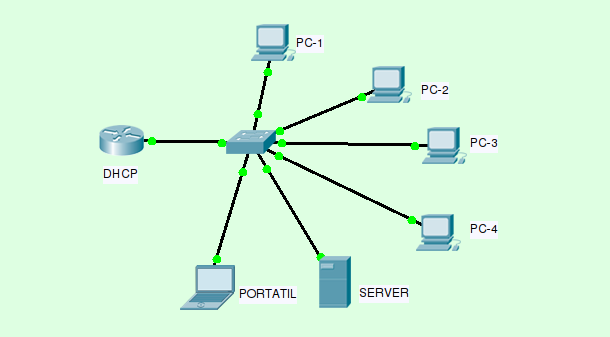

Sistemas de Red
En el módulo de Sistemas de Red, se abordan los principios fundamentales y avanzados de la configuración y administración de redes, incluyendo la implementación de diferentes tipos de infraestructura y el uso de equipos especializados como servidores, switches y routers.
📘 Contenidos destacados
- Arquitecturas de redes: LAN, WAN, MAN.
- Protocolos de comunicación: TCP/IP, DNS, DHCP.
- Configuración de dispositivos de red: servidores, routers, switches.
- Gestión y monitoreo de redes.
💻 Herramientas y equipos utilizados
En este módulo se utilizan herramientas como Cisco Packet Tracer, GNS3, y equipos físicos de red como routers, switches y servidores.
🔧 Ejemplo de configuración de red
A continuación se muestra un ejemplo de configuración de un servidor DHCP en un router Cisco:
Router> enable
Router# configure terminal
Router(config)# ip dhcp pool red_local
Router(config-dhcp)# network 192.168.1.0 255.255.255.0
Router(config-dhcp)# default-router 192.168.1.1
Router(config-dhcp)# dns-server 8.8.8.8
Router(config-dhcp)# exit
Router(config)# exit
📷 Evidencias

Configuración de un servidor DHCP en un router Cisco.

Monitoreo y gestión de redes utilizando herramientas especializadas.